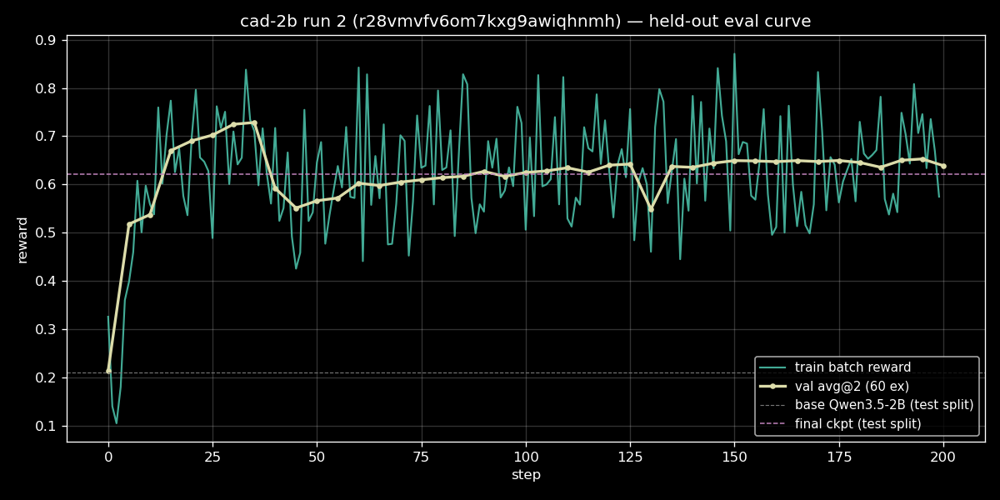
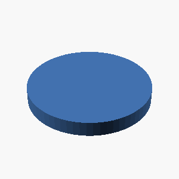
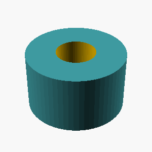
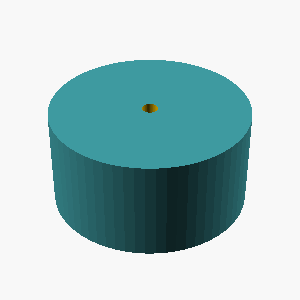
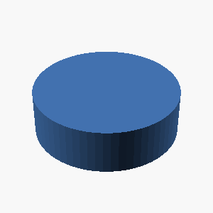
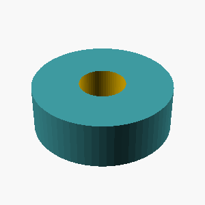
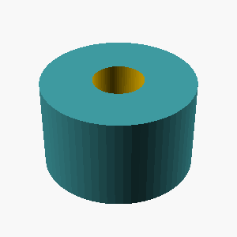

cad-env RL environment
Text → OpenSCAD code generation with fully deterministic geometric rewards: compile (0.2) + watertight (0.1) + single component (0.1) + chamfer-distance similarity (0.6) against procedurally generated reference meshes. No LLM judges. Environment on the Prime Intellect Hub · install: prime env install ashantanu/cad-env
cad-2b GRPO — run 2 (held-out eval + test-split leaderboard)
Run id: r28vmvfv6om7kxg9awiqhnmh · Run name: cad-2b-v2 · 2026-06-12
Fixes the two reporting gaps from run 1: (a) no eval-time held-out signal during training, (b) leaderboard reused the same val split, so there was no truly out-of-sample comparison. Both fixed: 41-point in-run val curve + a dedicated test split with OOD shape families, used for both the final-model score and the cross-model leaderboard.
Setup
| Base | Qwen/Qwen3.5-2B |
| Algo | GRPO (Prime hosted, compute=M) |
| Steps | 200 |
| Batch / rollouts | 32 examples × 8 rollouts |
| Max tokens | 1536 (no truncation observed in eval) |
| Sampling | enable_thinking=false, same for [eval.sampling] |
| Difficulty filter | drop batches w/ solve-all > 0.8 or solve-none > 0.2 |
| Env | ashantanu/cad-env (compositional, levels 1–4 in train) |
| Train pool | 2000 examples, seed 0 |
| Val (in-run) | 60 examples, seed+1, dedup vs train, levels 1–4, every 5 steps × 2 rollouts |
| Test (post-run) | 60 examples, seed+2, dedup vs train+val, 1-in-3 OOD shapes (level 5) |
| Checkpoints | every 10 steps, 25 retained |
| Cost | ~$0.30 (200 steps + 41 eval rounds) |
Eval piping (the actual fix)
Run 1 silently emitted zero eval metrics because the config used [val]
alone (mechanism A, dead) and [eval] with no [[eval.env]] sub-block
(mechanism B, no-op). Smoke run 2 armed [[eval.env]] and eval did fire,
but every score was ~0 with completion lengths up to 55K chars at
max_tokens=1024. Cause: [eval.sampling] is a separate config section
and does not inherit [sampling] — enable_thinking=false was being
dropped, so eval ran with thinking mode on. Once [eval.sampling] was
added, smoke run 3 returned base 0.153 → 0.518 in 10 steps with
completions back under 1024 chars. Then this run.
Training dynamics — in-run val curve

41 eval points, 60 held-out examples × 2 rollouts each:
| Step | val avg@2 | note |
|---|---|---|
| 0 (base) | 0.214 | matches base Qwen3.5-2B on the leaderboard (0.210) |
| 5 | 0.518 | format learning kicks in |
| 35 | 0.728 | peak |
| 40 | 0.592 | drop (likely a bad batch under difficulty filtering) |
| ~65–125 | 0.60–0.64 | recovery + plateau |
| 130 | 0.549 | second dip |
| 145–200 | 0.64–0.65 | stable plateau |
| 200 | 0.639 | final |
Headline: the model reaches its peak at step 35 (+0.51 over base) and then plateaus, not climbs. Training past ~35 steps does not improve the held-out reward. If we'd been watching this curve in run 1 (where we trained for 100 blind steps), we'd have stopped earlier.
Final-model on test split — and the leaderboard
After training, the merged adapter was deployed and evaluated on the held-out test split (60 examples, seed+2, deduped vs train+val, every 3rd example a level-5 OOD shape family never seen in training). Same protocol re-run for all 12 leaderboard models on the same test split.
Test-split leaderboard (n=30 examples × 4 rollouts = 120)
| Rank | Model | Mean | L1 | L2 | L3 | L4 | L5 (OOD) |
|---|---|---|---|---|---|---|---|
| 1 | anthropic/claude-haiku-4.5 | 0.957 | 1.00 | 0.97 | 0.87 | 0.92 | 0.98 |
| 2 | deepseek/deepseek-chat | 0.921 | 1.00 | 0.91 | 0.82 | 0.81 | 0.97 |
| 3 | qwen/qwen3-8b | 0.874 | 1.00 | 0.89 | 0.69 | 0.74 | 0.93 |
| 4 | openai/gpt-4.1-mini | 0.816 | 1.00 | 0.73 | 0.75 | 0.61 | 0.88 |
| 5 | google/gemini-2.5-flash-lite | 0.776 | 1.00 | 0.85 | 0.75 | 0.51 | 0.75 |
| 6 | openai/gpt-4.1-nano | 0.734 | 1.00 | 0.75 | 0.66 | 0.50 | 0.71 |
| 7 | mistralai/mistral-small-3.2-24b | 0.723 | 1.00 | 0.72 | 0.55 | 0.60 | 0.69 |
| 8 | Qwen3.5-2B + GRPO (ours) | 0.621 | 0.67 | 0.60 | 0.64 | 0.69 | 0.56 |
| 9 | meta-llama/Llama-3.2-1B-Instruct | 0.473 | 0.76 | 0.69 | 0.18 | 0.21 | 0.44 |
| 10 | Qwen/Qwen3.5-9B | 0.401 | 0.88 | 0.43 | 0.32 | 0.07 | 0.30 |
| 11 | Qwen/Qwen3.5-2B (base) | 0.210 | 0.45 | 0.09 | 0.13 | 0.07 | 0.24 |
| 12 | Qwen/Qwen3.5-0.8B | 0.110 | 0.27 | 0.00 | 0.18 | 0.04 | 0.08 |
| 13 | meta-llama/Llama-3.2-3B-Instruct | 0.087 | 0.17 | 0.00 | 0.00 | 0.00 | 0.16 |
Per-level deltas vs base Qwen3.5-2B
| Level | Base | Trained | Δ |
|---|---|---|---|
| L1 (primitives) | 0.45 | 0.67 | +0.22 |
| L2 (transforms) | 0.09 | 0.60 | +0.51 |
| L3 (booleans) | 0.13 | 0.64 | +0.51 |
| L4 (4-op chains) | 0.07 | 0.69 | +0.62 |
| L5 (OOD shapes) | 0.24 | 0.56 | +0.32 |
| Overall | 0.210 | 0.621 | +0.411 |
Reading the leaderboard
- The trained 2B beats Llama-1B and Qwen3.5-0.8B / 9B / Llama-3B on test. Sits ~0.10 below Mistral-Small-3.2-24B and ~0.11 below gpt-4.1-nano. ~3× the base 2B.
- It's the only model with a flat per-level profile. Frontier models all max out L1 at 1.00 and degrade with composition depth. The trained model started weak everywhere (L1=0.45, L4=0.07) and gained the most on the hardest in-distribution levels (L2/L3/L4: +0.51, +0.51, +0.62). It is best-in-class on L4 except for haiku/deepseek.
- OOD generalization is real, not vocabulary transfer. Level 5 contains shape families never present in training (torus, triangular prism, slot plate, counterbore, cross prism, pyramid, D-shaft). Score went 0.24 → 0.56 (+132% rel). The model learned compositional CAD primitives, not "this description string → that code snippet."
- In-run val (0.639) matches test (0.621) closely. Slight test-side drop is consistent with the L5 OOD examples being harder than the rest.
- Qwen3.5-9B (0.40) is a strange outlier — much worse than 8B. Likely a routing / inference artifact on PI, not a real capability gap; worth a second look.
- Llama-3.2-3B at 0.087 is broken in some way (likely refused or output garbage); 1B is fine.
What we know now that we didn't before
- Training would have been done at step 35, not step 200. Run 3 should early-stop on a val plateau detector or just cut to 50 steps.
- The eval-sampling section is its own thing on Prime —
[eval.sampling]must be set explicitly, doesn't inherit[sampling]. - Prime only converts the final training checkpoint into a deployable
adapter (
step=null, "merged"), not every retained checkpoint. To get a true test-split curve at multiple steps we'd need a separate mechanism (export raw weights and serve them ourselves, or ask for that feature). For now, the in-run val curve is the curve. - Difficulty filtering makes the train-batch reward unreliable as a signal — it noticeably drops past step 35 even as val plateaus, because the filter is feeding harder and harder examples in.
Caveats
- Train-batch reward (
reward/all/meanin the plot) shows mid-run dips past step 35 that don't reflect generalization loss; this is the difficulty filter at work. Trust the val curve. - Test set is 60 examples; per-level cells in the leaderboard are computed on ~16–40 examples each, so single-cell differences below ~0.05 are within noise.
- L5 OOD coverage is 7 shape generators × ~6 examples each. Wider OOD sweeps (different cuts, different parameter ranges) would be a more honest stress test.
Reproduce
# Train
prime train run configs/rl/cad-2b-v2.toml
# Final-model test-split eval
prime deployments create <merged_adapter_id>
PI_API_KEY=... uv run prime eval run cad-env \
-m "Qwen/Qwen3.5-2B:<merged_adapter_id>" \
--api-base-url https://api.pinference.ai/api/v1 --api-key-var PI_API_KEY \
-a '{"eval_split": "test"}' -n 30 -r 4 --max-tokens 2048
# Leaderboard (12 models)
./spikes/run_leaderboard.sh
Next
- Cut a run 3 at 50 steps with the same config + early-stop on val plateau, see if we save 75% of the budget for the same result.
- Try a 9B-class base (Qwen3.5-9B starts at 0.40 — there's a lot more room to gain).
- Or push the env harder: more OOD shape families, harder dimension matching tolerances, multi-turn refinement.
Before vs after on the test split
Six held-out examples with the largest reward jump. Reference (blue) · base Qwen3.5-2B (before) · GRPO Qwen3.5-2B (after). Hover a tile for the generated OpenSCAD.
L4 · A gear-like disc 6mm thick with radius 25mm, with 6 rectangular teeth evenly spaced around its rim. Each tooth is 5mm wide and extends 6mm radially outward from…


L2 · A solid hexagonal prism 35mm tall, 60mm across the flats, with two flats parallel to the x axis, with a 12mm-radius hole drilled vertically through the center o…


L3 · A solid hexagonal prism 25mm tall, 50mm across the flats, with two flats parallel to the x axis, with 4 holes of radius 2mm drilled vertically through it, evenl…


L1 · A solid rectangular box 65mm wide, 50mm deep, and 20mm tall.

 {
// $fn is not used for rectangular boxes
}")

L4 · A hexagonal prism (like a nut) 10mm tall, measuring 30mm across the flats, with a circular hole of radius 5mm drilled through its center along the axis.

 {
// Hexagonal prism facing up
prism(h=10, w=30, z=0, rotate([90,0,0])); // Hexagonal face up
// Circular hole for the nut
cylinder(h=10, r=5, $fn=64);
}")

L4 · A hexagonal prism (like a nut) 18mm tall, measuring 30mm across the flats, with a circular hole of radius 5mm drilled through its center along the axis.

 {
// Main hexagonal prism
hexaminepper($x = (2 - fscale(0.5, 29, , 1.5)),
$y = (2 - fscale(0.5, 29, , 1.5)),
$z = 18,
$fn = 64,
r1 = fscale(0.3333, 30, 18),
r2 = 0,
r3 = fscale(0.3333, 30, 18));
// Circular hole
cylinder(h = 18, r = 5, $fn = 64, top = 18);
}")
